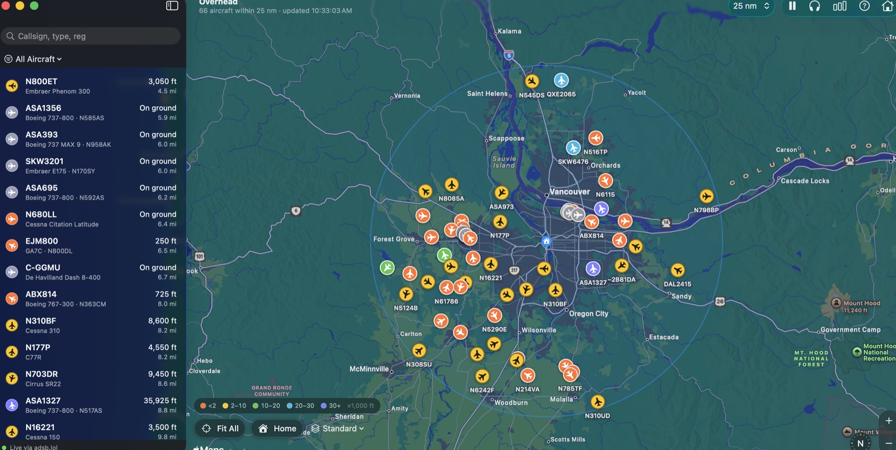

See what's flying over your location.
Overhead is a native Mac app that tracks every aircraft near your home in real time — on a live map, in desktop widgets, and with a heads-up before something passes overhead.
Download for macOS
Everything in your sky
Live positions from community ADS-B receivers, updated every five seconds — no account, no API key, nothing to configure beyond your address.
Live map
Every aircraft near you, pointing the way it's flying, with trails behind it. Standard, muted, satellite, or hybrid maps.
Spot it
Each aircraft tells you exactly where to look — "Look WSW, 38° up" — so you can step outside and find it.
Fly-over alerts
A notification up to two minutes before something passes nearly overhead — plus military, helicopter, low-altitude, and watchlist alerts.
Photos & routes
Click any aircraft for a photo of that exact airframe, its operator, type, and where the flight is coming from and going.
Logbook
Overhead quietly counts what passes by: aircraft per day, your sky's busiest hours, and every new type you've seen.
ATC audio
Listen to live air traffic control while you watch — paste any stream and Overhead keeps it a click away.
Widgets for your desktop
Three radar-scope widgets keep the sky visible without opening the app — in any accent color you like.
- Nearest Aircraft — the closest plane, its type, distance, and altitude
- Sky Radar — every aircraft plotted at its true bearing and distance
- Sky Board — the scope plus the five nearest aircraft
- Click any widget to open that aircraft in the app
Install in a minute
- Download the disk image and drag Overhead into your Applications folder.
- Open it and enter your address — or let it use your Mac's location. It's only ever used to ask "what's flying near this point?"
- To add widgets: right-click your desktop, choose Edit Widgets…, and search for Overhead.
Private by design
No account, no analytics, no tracking — just an app that looks up what's in the sky above one point you choose.
No account, ever
Nothing to sign up for and nothing to sign in to. Download it and it works.
Stays on your Mac
Your home location and every setting live locally. Only coordinates and a radius are ever sent — to ask what's flying there.
Community data
Positions come from volunteer ADS-B receivers — the same open networks that make this hobby possible.
Aircraft data from adsb.lol and adsb.fi. When you select an aircraft, its photo comes from Planespotters and its route from adsbdb.
Questions, a bug, or an aircraft you can't identify? Email me — I read everything.